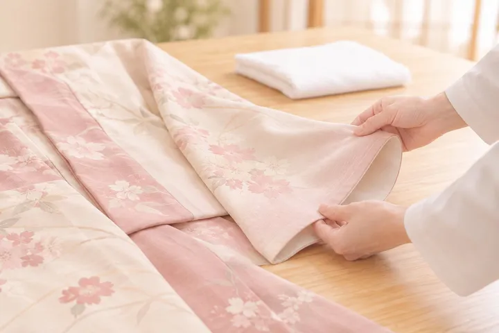
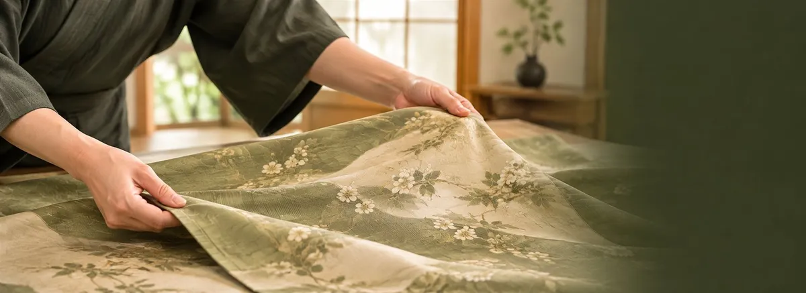
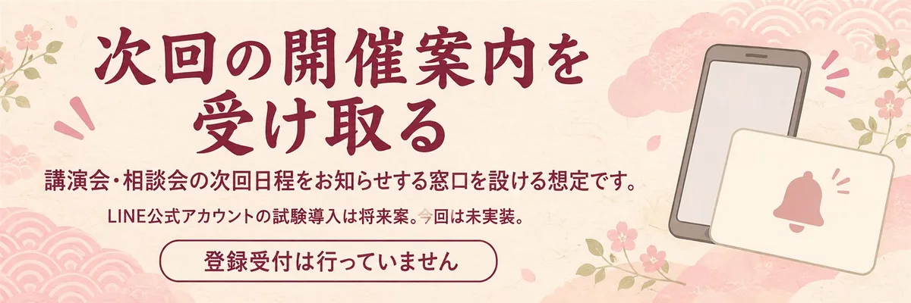
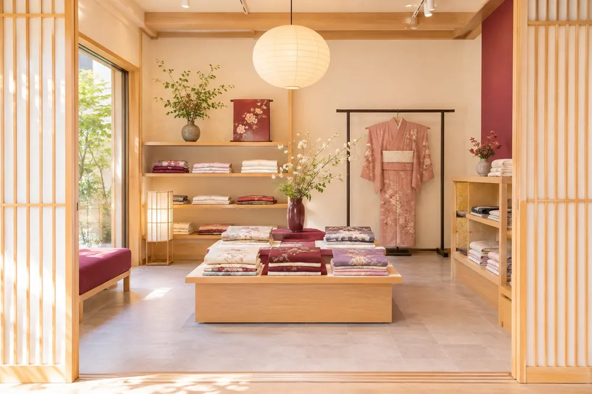

EVENTS
イベント・相談会
参加・来場のきっかけになる催しをまとめています。
-

着物のお手入れ相談会
詳細を見る → -

無料講演会（テーマ準備中）
詳細を見る -

着物でお出かけ散策会（サンプル）
詳細を見る
※ 掲載中の日程・会場はすべて架空のサンプルです。「終了しました」の表示は担当者が手動で切り替える想定です。
知る
無料講演会
着物や日本文化にまつわる話を聞ける場
整える
お手入れ・ご相談
しまったままの着物の困りごとを相談
出かける
イベント
着物で出かけるきっかけをつくる

CARE
着物のお手入れ・ご相談
しまったままの着物、気になる汚れ。
まずは困りごとを相談できる窓口です。
- 衿元や袖口の汚れが気になる
- しまったままの着物の状態を確認したい
- 着た後のお手入れや保管方法を知りたい
状態の確認やお見積もりは、現物を拝見してからのご案内になります（写真だけでの判断・効果の保証はしません）。
お手入れ・ご相談について次回の開催案内を受け取る
講演会・相談会の次回日程をお知らせする窓口を設ける想定です。（LINE公式アカウントの試験導入は将来案。今回は未実装）


LINKS
関連サイト
和想館の公式・外部サイト
振袖専用サイト
振袖に関する情報は、公式の振袖専用サイトでご案内しています。
↗ 外部サイト（リンクは後で設定）
小倉英嗣の自主制作デモ
オンラインストア（Shopify）
Shopifyで制作した非公式の練習用ストアです。和想館の公式ストアではありません。実際の購入・予約・お問い合わせは受け付けていません。
別タブで開きます。閲覧用パスワードは、提出資料または面接時に別途ご案内します。